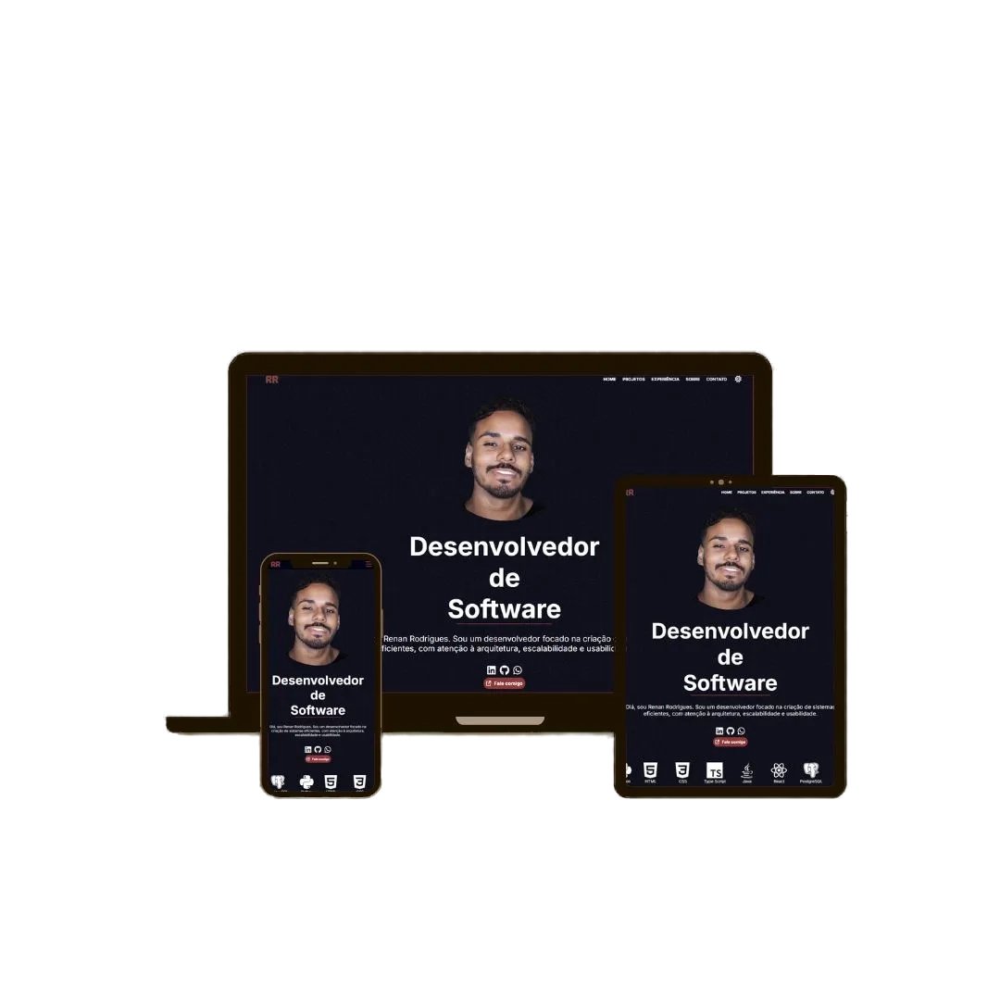
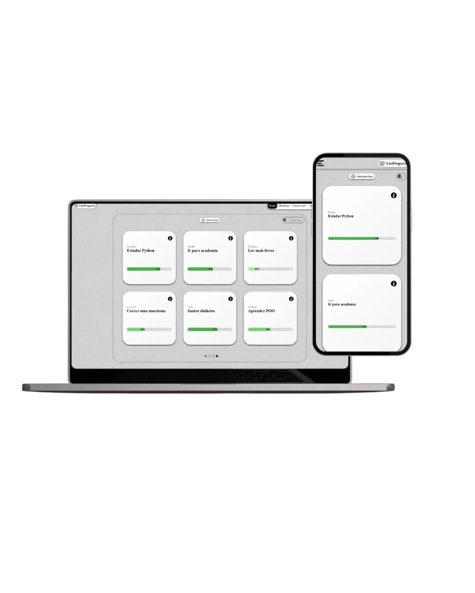
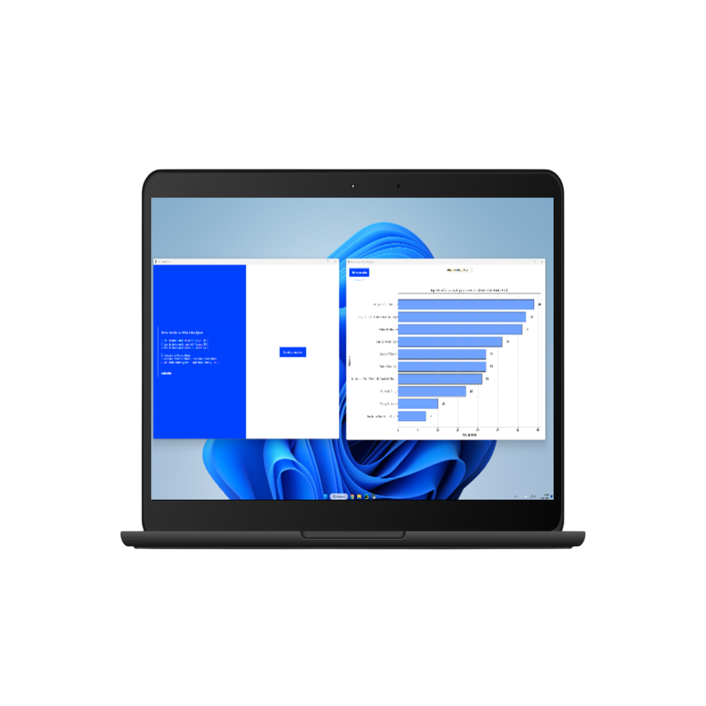
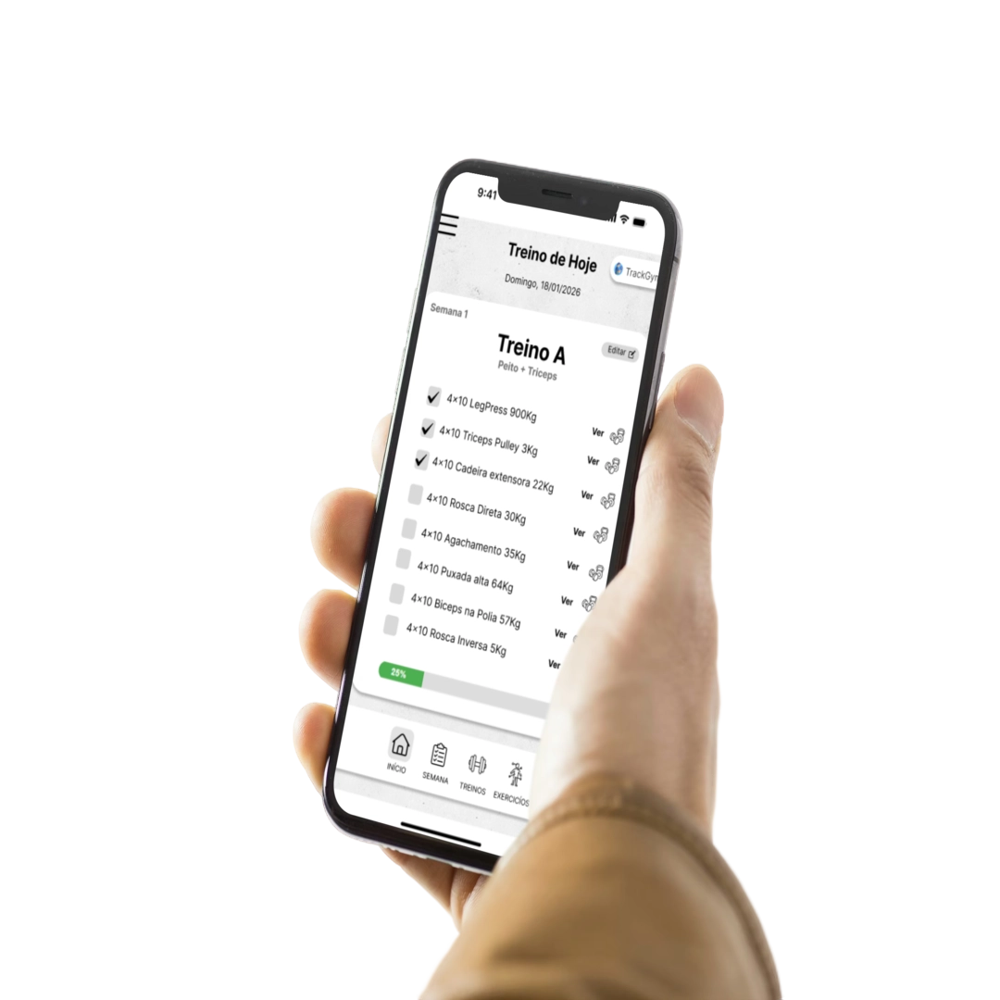

Front End
Desenvolvo interfaces responsivas com React e TypeScript, focado em usabilidade, estados de interface, clareza de interação e consumo de APIs REST.
Back End
Desenvolvo e consumo APIs REST com Express e TypeScript, aplicando validação de dados, tratamento de erros, organização de rotas e responsabilidades.
Banco de Dados
Modelagem de dados relacionais e SQL com PostgreSQL, incluindo CRUD, integridade referencial, views, índices simples e funções em PL/pgSQL.
Projetos




Aprendizados
ao longo do tempo
Formação .NET | SENAC
Curso intensivo onde obtive os primeiros conhecimentos em programação, aplicando conceitos em projetos práticos e adquirindo boas práticas de desenvolvimento.
- Lógica de programação;
- Desenvolvimento de aplicações web;
- Versionamento de código com Git e Github;
Jovem Aprendiz Tecnologia | Stefanini IT
Atuei com desenvolvimento em Java, Programação Orientada a Objetos (POO) e Banco de Dados (PostgreSQL). Durante esse período, também desenvolvi conhecimentos em modelagem de dados relacionais (ER).
- Criei um pequeno sistema financeiro em Java;
- Desenvolvi APIs REST com Spring Boot;
- Recebi mentoria de profissionais seniores;
Análise e Desenvolvimento de Sistemas | Estácio
Desenvolvimento de habilidades em lógica de programação, estruturas de dados e criação de aplicações web, mobile e desktop. Busco aplicar todo o aprendizado em projetos práticos.
Pós em Engenharia de Software
Pretendo iniciar uma pós-graduação em Engenharia de Software com foco em arquitetura de sistemas, práticas avançadas de desenvolvimento e qualidade de software, visando projetar sistemas mais escaláveis, sustentáveis e alinhados às demandas do mercado.

Algumas palavras sobre mim
Olá, me chamo Renan Rodrigues. Sou um desenvolvedor de software full stack e graduando em Análise e Desenvolvimento de Sistemas.
Busco manter meu foco além da teoria; principalmente na prática, utilizando tecnologias e ferramentas modernas para desenvolver sistemas eficientes e organizados.
Esse portfólio reúne alguns dos projetos que desenvolvi ao longo dessa jornada e representa meu aprendizado prático e evolução técnica.
Aguardo o seu contato!
- Brasil, Rio de Janeiro
- +55 (21) 97633-3733
- contato@devrenanrodrigues.com